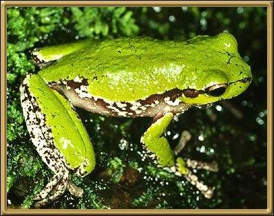

Unfortunately I don't know the common name of this frog,
although I imagine its name means something like Burrowing Beach Dweller (Litoria means
Beach Dweller). As well, I haven't been able to find any information about this
pretty frog either.
Photographer: Ron Mawbey